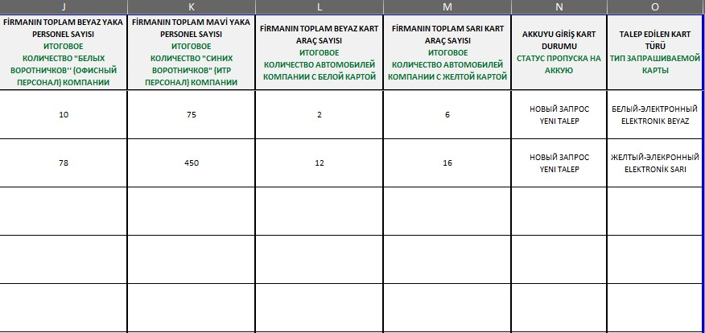
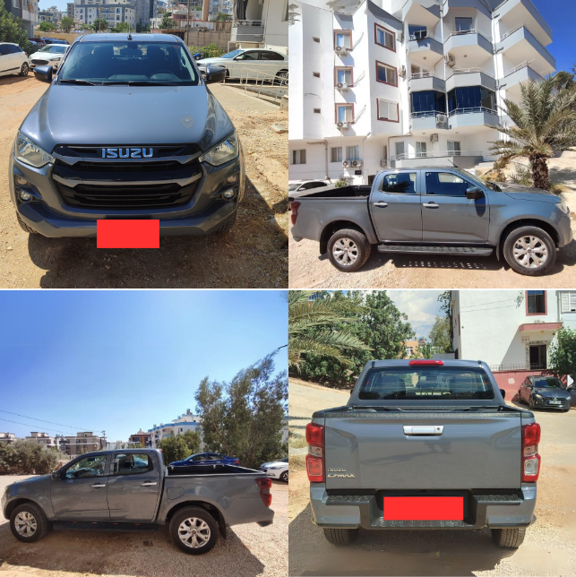

Шаги и документы, необходимые для подачи заявки на пропуск в зону Akkuyu NGS
Для того чтобы успешно подать заявку на пропуск в зону Akkuyu NGS, персонал должен следовать определенным шагам и предоставить документы, указанные ниже.
Заявки с неполной информацией или документами не будут рассмотрены.
1. Подготовка письма-заявки
Перед подачей заявки подготовьте письмо, адресованное директору по безопасности T2-IC JV Артему Зародышу и со-директору Селиму Темрену.
В письме подробно укажите информацию о вашем персонале и транспортных средствах, а также укажите следующие данные:
• Укажите количество сотрудников, разделив их на белые и синие воротнички.
• Разделите информацию о транспортных средствах на белые и желтые карты, укажите данные о легковых автомобилях, фургонах и служебных автомобилях.
Отправьте подготовленное письмо на адрес office@t2ic.com и добавьте в поле Cc адреса gonenc.caynak@t2ic.com и rifat.kucuk@t2ic.com.
2. Документы для подачи заявки
Для подачи заявки необходимо предоставить следующие документы в полном объеме:
• Регистрационное удостоверение автомобиля: Копия регистрационного удостоверения каждого транспортного средства
• Форма письма для автомобиля: Заполненная в формате Excel форма, заверенная печатью и подписью компании.
• Двуязычное письмо-заявка: Письмо на русском и турецком языках в формате PDF
• Фотографии автомобилей: Фотографии автомобиля с четырех сторон
3. Типы пропусков и условия их использования
На территории Akkuyu NGS используются два типа электронных пропусков для легковых автомобилей:
• Белый электронный пропуск: Пропуск, который позволяет осуществлять вход и выход 24/7.
• Желтый электронный пропуск: Пропуск с ограниченными часами входа и выхода.
- Часы входа и выхода: Использование разрешено только с 06:00 до 10:00 и с 16:00 до 20:00.
- Для транспортных средств, перевозящих грузы, выдается только желтый пропуск; белый пропуск не выдается.
4. Требования к должности для подачи заявки
Персонал, подающий заявку, должен занимать должность не ниже руководителя отдела или начальника участка (с указанием названия участка) или более высокую должность.
Заявки сотрудников с более низкими должностями рассматриваться не будут.
ВАЖНО: Вход и выход транспортных средств с желтым пропуском вне указанных часов строго запрещены.

Требования к письму-заявке
Для подачи заявки на пропуск в зону Akkuyu NGS подготовленное письмо должно соответствовать следующим требованиям.
Заявки с неполной или ошибочной информацией не будут рассмотрены и будут возвращены.
1. Информация о компании и данные о персонале
• Количество сотрудников: следует указать количество белых и синих воротничков отдельно.
• Количество транспортных средств: необходимо указать количество легковых автомобилей, фургонов и служебных автомобилей, разделив их на белые и желтые карты.
2. Основания для заявки
• Если требуется белый электронный пропуск, необходимо указать причину и обоснование необходимости прохода для транспортных средств с желтым пропуском в запрещенные часы.
• Заявки, не поясняющие необходимость прохождения в часы пик или не обосновывающие причину, рассматриваться не будут.
3. Требования к языкам
• Письмо должно быть переведено на русский и турецкий языки без ошибок.
Процесс обработки
Заявки будут рассмотрены в конце месяца.
Процесс утверждения: Утверждение будет осуществляться в первой половине следующего месяца генеральным директором строительства NGS компании Akkuyu Nuclear S. Butskikh.
В форме письма для транспортных средств в колонке "Статус запроса" должен быть выбран один из следующих вариантов:
• Новый запрос: Выбирается, если подается первый запрос на пропуск для транспортного средства.
• Изменение водителя: Этот вариант используется, если для существующего транспортного средства назначается новый водитель.
• Изменение транспортного средства: Выбирается, если требуется заменить зарегистрированное транспортное средство.
• Изменение типа карты: Выбирается, если требуется изменить тип карты на белую или желтую.
• Неверная заявка: Этот вариант используется для заявок с неполной или неправильной информацией.
Убедитесь, что вы выбрали правильный вариант, чтобы ваши заявки были обработаны быстро и корректно.

В колонке "Статус пропуска Akkuyu" должен быть выбран правильный и полный вариант. Это необходимо для правильной оценки заявки. Если выбор не будет сделан, заявка может быть отклонена.

Выбор типа карты должен быть указан как Электронная Белая или Электронная Желтая. Этот выбор необходим для правильной оценки карты в соответствии с ее назначением и разрешенными часами использования.

Форма письма для транспортных средств в Excel должна быть заполнена внимательно, как показано в примере, и в соответствии с нижеследующими правилами:
1. Должность и ФИО получателя: В поле получателя формы должны быть правильно и полно указаны должность и ФИО соответствующего лица.
2. Количество сотрудников: Необходимо указать информацию о персонале на объекте в формате белые воротнички/синие воротнички с точным числом.
3. Информация о транспортных средствах: Необходимо правильно и полностью указать марку и номер транспортного средства, для которого запрашивается пропуск.

В текущей форме письма для транспортных средств необходимо четко указать количество использованных карт. Если имеется несколько белых карт, необходимо указать процентное и числовое увеличение персонала с момента выдачи последней карты. Эта информация обязательна для полного соответствия требованиям заявки.

Регистрация транспортного средства должна быть подготовлена в виде читаемого и цветного фото или PDF файла на одной странице.
Документ должен быть четким и понятным, в противном случае процесс подачи заявки может быть затруднен.

Фото транспортного средства должно быть сделано с четырех сторон с четким и правильным углом. Фотографии должны показывать все детали автомобиля,
чтобы заявка могла быть обработана без проблем.